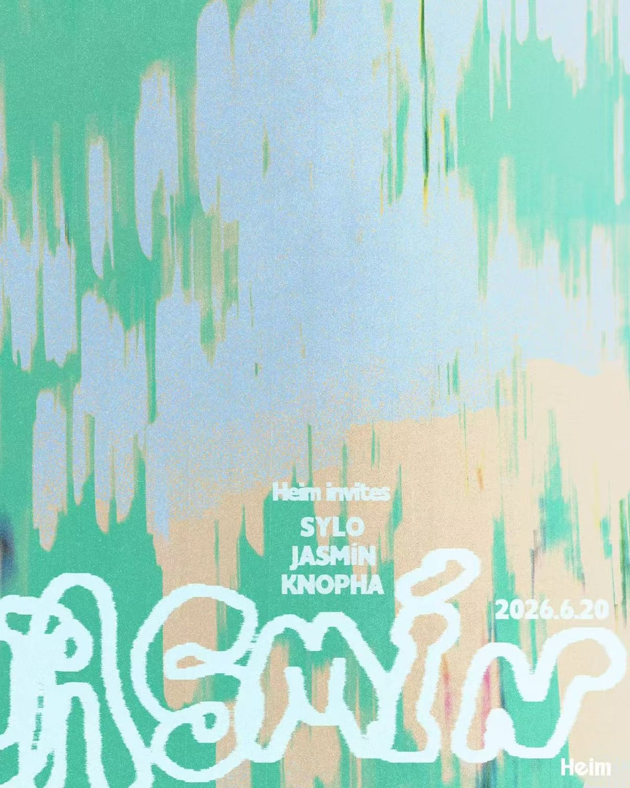

past / Watch
Jasmin + Knopha
Single-source lead for a textured Heim night joining Dutch producer/DJ Jasmin with Knopha.

DateJun 20
TimeCheck venue
VenueHeim Sauna
DistrictHuangpu
Soundtechno-dubstep hybrid, house, club music
PriceCheck Heim
Age / IDCheck venue
Source layerwatchlist
Intensityhigh
Credibilityunconfirmed
Event Tags
Simple tags for sound, room context, ticket/source status, and details that still need a source check.
How We Recommend This
- RecommendationKept on Watch, but now stronger: Sylo, Jasmin, and Knopha point to bassy, broken, techno-adjacent club music at Heim; ticketing and set times still need a direct route before this becomes a firm pick.
- Best forBest for listeners who want Heim at its bass, breaks, DnB, and textured-club edge rather than a straight four-to-the-floor techno night.
- Verify before goingConfirm whether Heim opens this date through Yuyuan, and check door price, age rule, and set times before planning around the June 20 Jasmin / Sylo / Knopha night.
- Source confidenceHeim-provided poster/monthly/article screenshots plus SmartShanghai confirm date, venue, and lineup. Public browser/social checks are context only; ticketing, price, age policy, and running order remain unconfirmed.
Lineup and Notes
- SyloHeim poster and monthly schedule screenshots list Sylo on the June 20 Heim Invites: Jasmin bill.
- JasminHeim poster/monthly/article screenshots and SmartShanghai confirm Jasmin on the June 20 Heim bill; profile sources support the bass, DnB, and techno-adjacent lane.
- KnophaHeim poster/monthly/article screenshots and SmartShanghai confirm Knopha as support; RA profile context supports China/Shanghai club relevance.
Source Trail
- SmartShanghai June 2026 clubbing guide watchlist / checked 2026-06-15 SmartShanghai lists June 20 at Heim Sauna with Jasmin and Knopha, but does not expose ticket price or set times in the guide.
- Heim Invites Jasmin poster screenshot official-social-screenshot / checked 2026-06-15 User-provided Heim poster screenshot confirms Heim Invites, Sylo, Jasmin, Knopha, date 2026-06-20, and Heim branding.
- Heim June 2026 monthly schedule screenshot official-wechat-screenshot / checked 2026-06-15 Heim monthly schedule screenshot lists 06.20 Heim Invites: Jasmin with Sylo, Jasmin, and Knopha.
- Heim WeChat article screenshot official-wechat-screenshot / checked 2026-06-15 Heim article screenshot describes the 06.20 Heim Invites: Jasmin entry and supports the bass, distorted techno, low-frequency, DnB, and layered-rhythm lane. It does not expose ticket price or set times.
- Jasmin Minor AM profile artist-profile / checked 2026-06-15 Profile source supports Amsterdam/Dutch-Argentinian identity and techno, bass, DnB, and percussion-led selection context; not event confirmation.
- Jasmin Bandcamp artist-profile / checked 2026-06-15 Bandcamp tags and release text support techno, bass, and dub context for the Jasmin sound lane.
- Knopha Resident Advisor profile artist-profile / checked 2026-06-15 RA profile supports Knopha China/Shanghai club context; not a June 20 ticket confirmation.
- SmartShanghai Heim venue context venue-context / checked 2026-06-15 SmartShanghai confirms Heim as a basement club focused on techno, house, electro, and club music. Venue context only.
- Heim public social browser check social-lead / checked 2026-06-14 Browser check 2026-06-14 reached public Heim social metadata only. Keep as social-lead: it did not confirm the Jun 20 ticket route, price, age rule, or set times; the 2026-06-15 Heim WeChat screenshots now carry event-level confirmation.
This lead is intentionally noindexed until a direct venue, promoter, ticketing, RA, SmartShanghai detail, or official artist source confirms the details.
Trust Ledger
- Last checked2026-06-15
- Selection basisWatchlist lead kept visible for source monitoring; do not treat date, lineup, or ticketing as final until stronger evidence lands.
- Commercial relationshipNo paid placement recorded.
- Correction routeSend source fixes through RED 980793145 or the corrections policy.
- PolicyHow We Recommend / Corrections